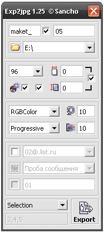

Export To JPG (SanM_ExportToJPG)
Sancho / 07.07.2008, 23:20/00:41
Форум:
Макрос для быстрого и удобного экспорта в *.jpg, как выделенного, так и всех страниц за раз. Также есть возможность автоматической генерации письма в TheBat с прикреплённым макетом(ми).

Узнать подробнее можно тут
А как же мне показать этот корелдрошный файл?
Сообразил... Извините форумного новичка...
Мне кажется я прикрепил файл с расширением .cdr
Но вроде я его здесь на форумной странице не вижу.
Подскажите, может стоит его прикрепить еще раз.
Извините за мою пока неуклюжесть на этом форуме
Hepatitis C,
Добрый вечер, извините, что отвечаю не сразу. Мне казалось, что я вам каким-то образом направлял ответ, но, видимо, по неопытности, что-то сделал не так.
Прикрепляю файл (в .cdr).
В надежде, что вы сможете помочь
Александр
странно на самом печатном листе я не вижу полос, не на а6 формате, не на а4, а3, а2... но при печати в PDF, в файле вижу не большие полосы при увеличении больше чем в 12 раз (100:1200). попробуйте мой файл напечатать. Возможно что-то можно настроить в параметрах печатного оборудования, возможно в другом профиле - не swop, попробовать перевести в раст, попробовать печатать не из корела.
Hepatitis C,
Еще раз вам огромное спасибо за участие.
Удивительно, что незнакомый человек с готовностью откликнулся помочь.
Можно узнать, как Вас зовут?
Я распечатал в стандартном магазине офисной техники (OfficeMax) ваш PDF-file.
Он получился действительно получше (хотя, как Вы и отметили, слегка заметные лучики все-таки проявляются). Лучше чем все фотографии, которые я печатал как файлы JPG (на фирменных Kodak, Fujie и др.) общедоступных автоматах в специальных магазинах).
При этом при переформатировании из файла .CDR в .JPG я в tab Print выставлял и 350 и 450 шагов (не очень понимаю, почему именно там, но больше нигде я не обнаружил возможности сделать такую установку). Всё равно при печати как фотографии (на фотобумагу) я вижу ненавистные уже мне лучи разделения (малозаметные - но ведь не должно ведь их быть - когда мы печатаем фото с фотоаппарата при переходе цветов это происходит плавно и абсолютно незаметно!).
Самое странное - это то, что я на своем хиленьком принтере (Epson-88+) попробовал распечатать сразу с корел - и получилось идеально - ни единого лучика, хоть в лупу смотри, переходы - плавнее не бывает! Конечно яркость и прочее слабенькое, потому и хочу распечатывать на нормальном оборудовании. А там меня поджидает уже кучу времени одна беда.
Вся надежда на Вас. Ощущение, что где-то какие-то установки надо выполнить, но где они...?
Всего Вам доброго,
с уважением
Александр
точно сказать не могу почему так получается... часто встречаю градиенты с площадью объекта большего чем кол-во шагов самого градиента, и тогда шаги печатаются широкими полосами и это не красиво, именно такие заливки мы преобразуем в пдф или джепег и печатаем через адоб фотошоп, или закидываем в иллюстратор и печатаем от туда... 8 из 10 таких градиентов получается напечатать более плавнее... иногда обычное растрирование в документе помогает... а про ваш возможно малое кол-во шагов самого градиента (1 цвет состоит из 100 желтого и 100 красного, переходит во второй цвет 60 синего число шагов допустим будет 260, и значит объект с длиной 260 мм будет выглядеть шаг по 1 мм. Если добавить в каждом цвете еще 50 другого цвета/черного - при этом изменится оттенок, можно получить больше шагов и более устойчивые шаги заливки)
а в настройки печати и документа в короле можно выставить кол-во шагов градиента просмотра/печати... И смотря как вы будите использовать этот документ/продукт - уже готовый печатный - возможно эти мелкие полосы не повлияют на его функцию, допустим в рамке фото с полосой в 0,5 мм не будет заметно, если допустим это какая-то работа которую будут оценивать не обыватели - может и не прокатить...))
Страницы